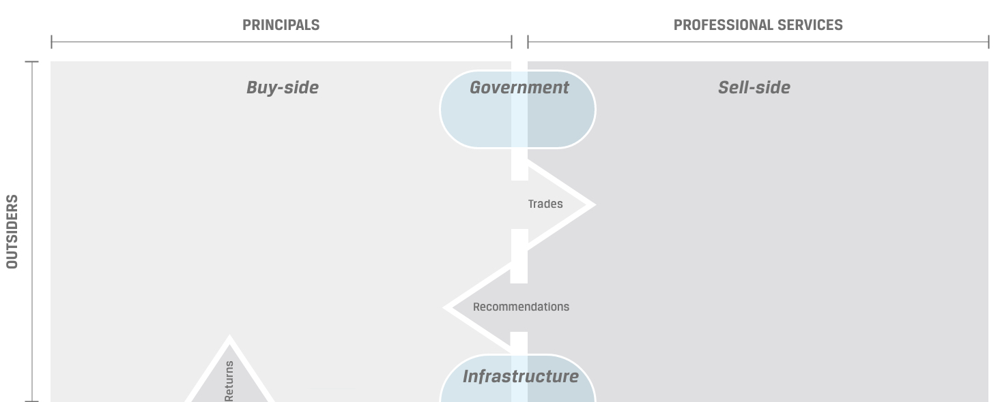
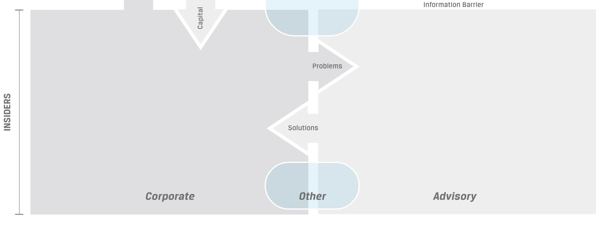

 
CIO
3,800 Charterholders
Valuing markets & dynamic SAA.
Take Quiz ›
Product Manager
500 Charterholders
Design & operation of investment products.
Take Quiz ›
Portfolio Manager
33,000 Charterholders
Security & asset-class valuation, portfolio mgmt.
Take Quiz ›